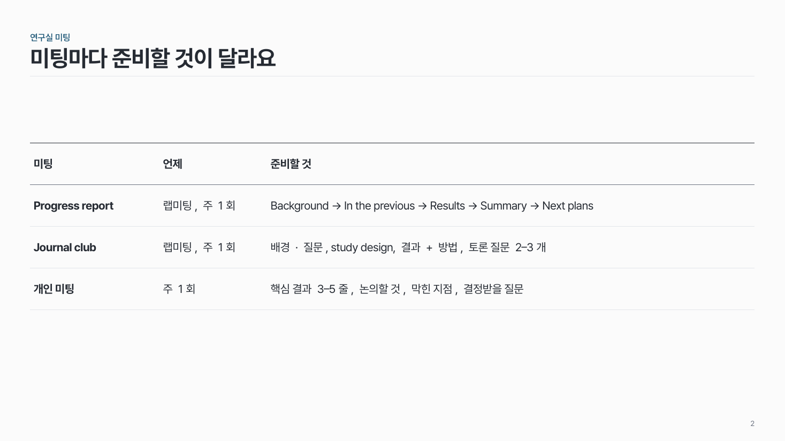
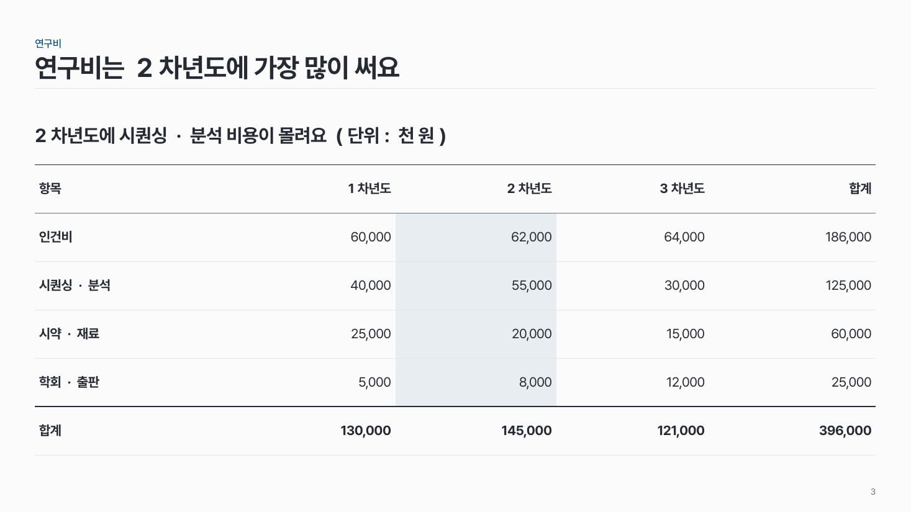

표 data-07
가로선만 있는 표. 머리행 위에 짙은 선, 할 말은 표 위에 한 줄, 강조 열은 옅은 색 면.

이 시안
글 표 · 굵은 첫 열 · 회색 열 (8행)
슬라이드 제목: 보여 줄 것에 맞춰 그래프를 골라요
언제 쓰나
연구비, 성과지표, 연차별 목표 같은 숫자 표나, 항목·설명·기준이 칸으로 나뉘는 글 표가 필요할 때요.
구성
- 표 위에 할 말 한 줄 (선택).
- 머리행: 굵은 글씨 + 위에 1pt 짙은 선. 단위는 머리행에.
- 행 사이는 0.5pt 옅은 회색 가로선만. 세로선은 없어요.
- 첫 열(이름)은 굵게, 덜 중요한 열은 회색 글씨.
- 강조할 열 하나는 옅은 색 면, 합계 행은 굵게 + 위 짙은 선.
지킬 것
- 숫자는 오른쪽 맞춤, 글은 왼쪽 맞춤.
- 글자 크기는 표 전체에서 같게.
- 강조는 한 열(또는 한 칸)만.
하지 말 것
- 표를 그림(스크린샷)으로 붙이지 않아요. 다시 만들어요.
- 기본 표 스타일(줄무늬, 모든 테두리)을 그대로 쓰지 않아요.
- 강조에 빨간 테두리 상자를 쓰지 않아요.
PowerPoint에서
표를 선택하고 테두리 > 테두리 없음으로 모두 지운 뒤, 가로선만 다시 그어요. 예시 pptx의 표는 이 스타일이 이미 적용돼 있어서, 행을 복사해 쓰면 돼요.
시안 비교
같은 내용을 옵션만 바꿔 그렸어요. 그림을 누르면 크게 보여요.
A글 표 · 굵은 첫 열 · 회색 열 (8행)
슬라이드 제목: 보여 줄 것에 맞춰 그래프를 골라요

B짧은 글 표 (3행)
슬라이드 제목: 미팅마다 준비할 것이 달라요

C숫자 표 · 할 말 한 줄 · 강조 열 · 합계 행
슬라이드 제목: 연구비는 2차년도에 가장 많이 써요